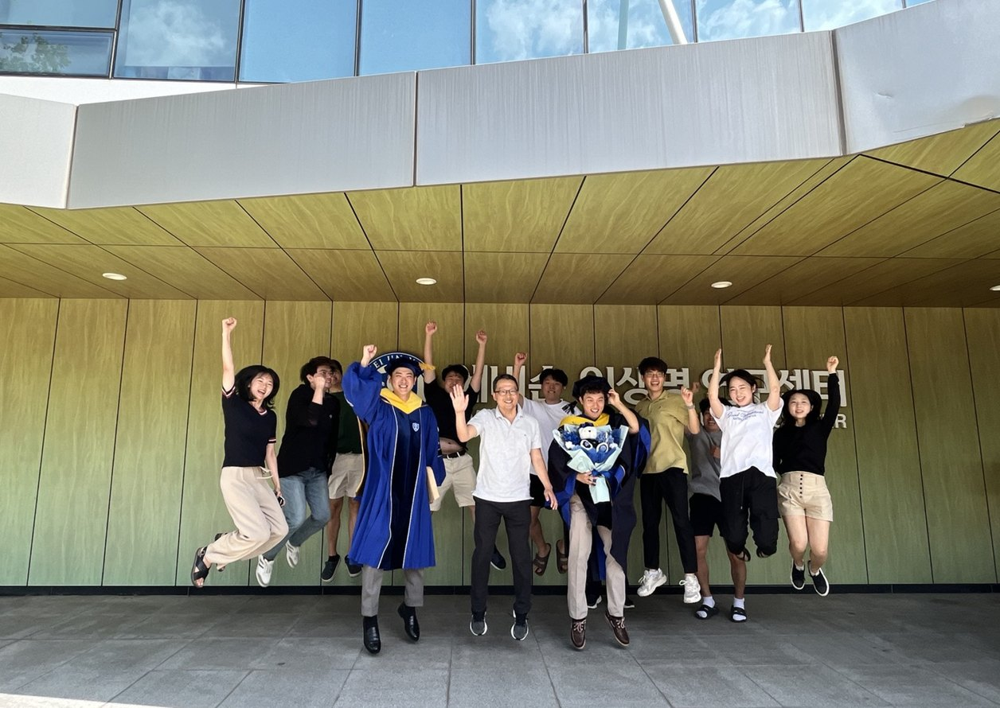
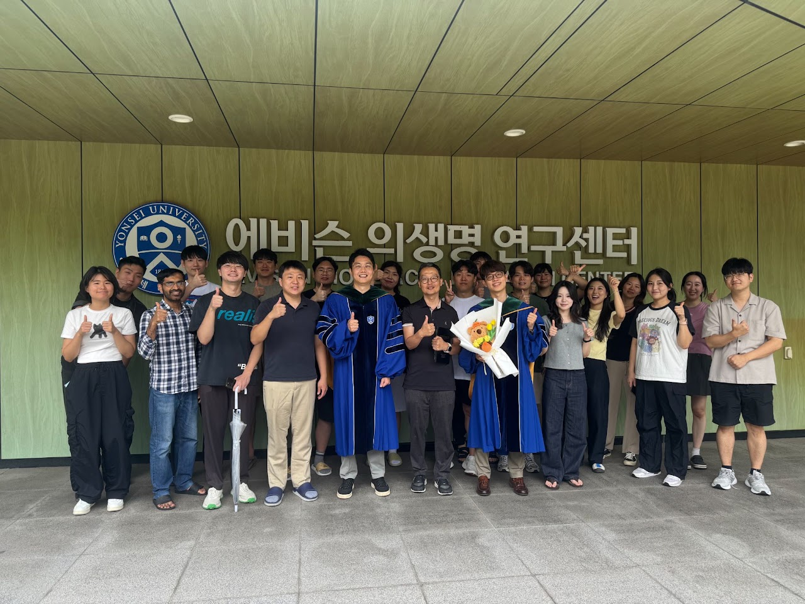
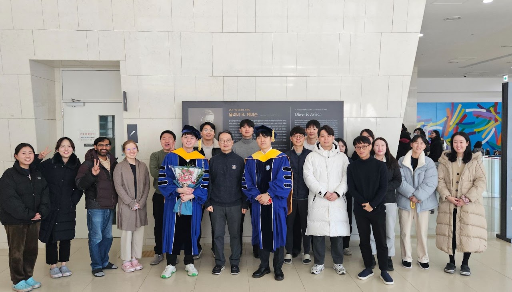
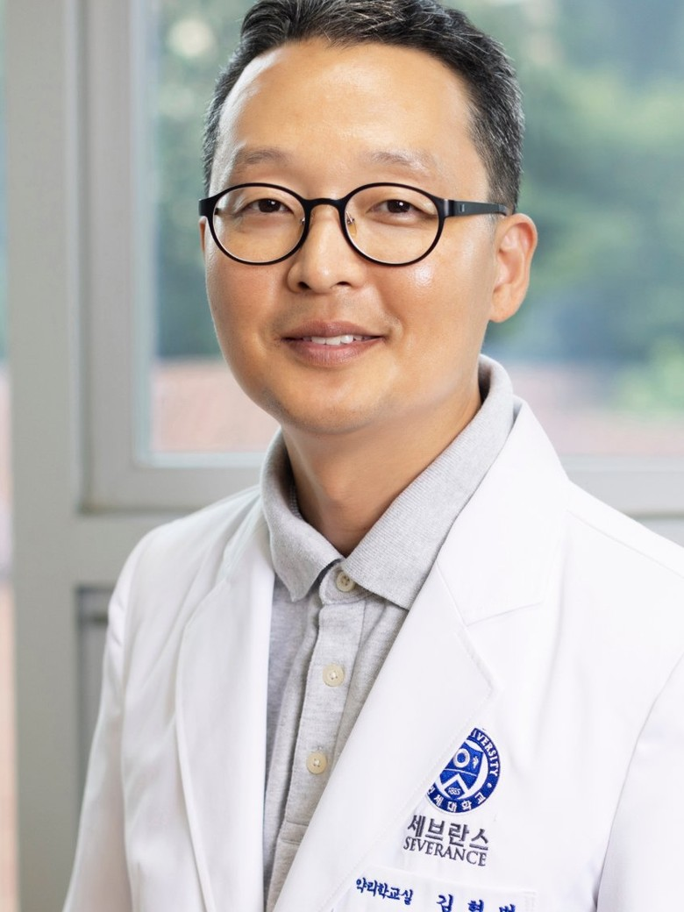

From new genome technologies to change in patients' lives.유전체를 다루는 새로운 기술부터, 환자의 삶을 바꾸는 가능성까지.
We develop the tools and the underlying technologies for controlling and designing the genome with precision. Building on artificial intelligence and large-scale genome-editing experiments, we create new technologies and use them to explore how life works. Our research runs from building the technology, to understanding life, to new diagnostics and therapies.우리는 유전체를 정밀하게 조절하고 설계하기 위한 도구와 원천기술을 개발합니다. 인공지능과 대규모 유전자 교정 실험을 바탕으로 새로운 기술을 만들고, 그 기술로 생명 현상을 탐구합니다. 기술의 개발에서 생명의 이해로, 그리고 새로운 진단과 치료로 연구를 이어갑니다.
Research연구
Our aim is to contribute to new diagnostics and therapies for human disease through genome editing and gene therapy.유전자 교정과 유전자 치료로 인간 질환의 새로운 진단법과 치료법을 만드는 데 기여하는 것을 목표로 합니다.
In vivo gene correction생체 내 유전자 교정 치료
We develop treatments for intractable diseases through genome editing.유전자 교정을 통해 난치성 질환에 대한 치료방법을 개발합니다.
AI prediction of editing efficiency and outcomes인공지능 기반 유전자 교정 효율 및 결과 예측
We use AI models to predict, accurately, how thousands of guide RNAs will perform, and select the optimal genome editor on that basis.수천 개의 가이드 RNA의 성능을 인공지능 모델을 이용하여 정확하게 예측하고, 이를 기반으로 하여 최적의 유전자 가위를 선별합니다.
Better genome editors더 뛰어난 교정 도구 개발
We develop better genome editors, grounded in basic science.기초과학에 기반하여 더 뛰어난 교정 도구를 개발합니다.
Reading every variant유전 변이의 기능 해독
We resolve variants that could not be interpreted, on experimental evidence generated with genome-editing tools.해독이 안 되던 변이를, 유전자 교정도구를 이용한 실험적 근거 기반으로 해독합니다.
Research tools연구 도구
Our prediction models are free to use on DeepGE, a unified web platform for CRISPR–Cas variants, base editors, and prime editors.저희 예측 모델은 CRISPR–Cas 변이체·염기 교정·프라임 교정을 아우르는 통합 웹 플랫폼 DeepGE에서 무료로 사용할 수 있습니다.
Clinical tools임상 도구
Which mutation in a patient's tumour resists which drug. We install every variant of a gene by prime editing, treat the cells with the drugs used in the clinic, and read out the resistance.환자 종양의 어떤 변이가 어떤 약에 내성을 보이는지 알려줍니다. 프라임 교정으로 유전자의 모든 변이를 만들고, 임상에서 쓰는 약을 처리해 내성을 측정했습니다.
News연구실 소식
Recent highlights from the lab.연구실의 최근 소식입니다.
Alumni who now run their own labs (tenure-tracked faculty)전임교원(tenure-track) 임용
Trainee awards학생·연구원 수상
Selected publications주요 논문
A selection of recent work; each title links to the paper.최근 주요 논문입니다. 제목을 누르면 원문으로 연결됩니다.
Green marks our lab members, * first authors, + corresponding authors.녹색은 우리 연구실 구성원, *는 제1저자, +는 교신저자입니다.
Full list of publications전체 논문 목록
* first authors · + corresponding authors* 제1저자 · + 교신저자
People구성원



Alumni & where they are now동문 · 현 소속
Photos갤러리
Moments from the lab — graduations, celebrations, and everyday life.졸업과 축하, 그리고 연구실의 일상.
Principal Investigator교수 소개

Hyongbum Henry Kim, M.D., Ph.D.김형범김형범Hyongbum Henry Kim, M.D., Ph.D.
Fellow, Korean Academy of Science & Technology 약리학교실 교수 · 연세 이윤재 펠로우
한국과학기술한림원 정회원
hkim1@yuhs.ac
aquamd@gmail.com
Education학력
Career경력
Awards수상
Fellowships & Memberships학회 활동
Join us함께 연구하기
We always welcome energetic young scientists who want to open up the future through life-science research — graduate students and postdoctoral fellows alike.생명과학 연구를 통해 미래를 개척하고자 하는, 진취적이고 열정이 있는 젊은 과학도(학위 과정 및 박사후연구원)의 참여를 언제나 환영합니다.
Open positions모집 분야
- Research professors and postdoctoral fellows연구교수 · 박사후연구원
- Graduate students대학원생
- Research staff연구원
- Undergraduate students학부생
Graduate students대학원생
We recruit on an ongoing basis. Full tuition and a living stipend are covered, with a performance-based incentive paid at the end of the year. We recommend applying for a lab internship at least 3–9 months before the official graduate admission schedule of Yonsei University College of Medicine. There are three rounds of interviews.상시 모집합니다. 등록금 전액과 생활비가 지원되며, 성과에 따라 연말에 인센티브가 지급됩니다. 연세대학교 의과대학의 공식 대학원 지원 일정보다 최소 3~9개월 이전에 연구실 인턴십에 지원하실 것을 권장합니다. 3차에 걸친 인터뷰가 있습니다.
Postdoctoral fellows박사후연구원
We recruit on an ongoing basis across the whole of biology — molecular and cell biology, genetics, biochemistry, bioinformatics, deep learning, medicine, structural biology and developmental biology. There are three rounds of interviews.생물학 전 분야 — 분자생물학, 세포생물학, 유전학, 생화학, 생물정보학, 딥러닝, 의학, 구조생물학, 발생생물학 — 의 전문 지식과 경험이 있는 분을 상시 모집합니다. 3차에 걸친 인터뷰가 있습니다.
If you would like to work with us, please send a short note about yourself and your CV to the address below.함께 연구하고 싶은 분은 간단한 자기소개와 이력서(CV)를 아래 이메일로 보내주세요.
Yonsei University College of Medicine
50-1 Yonsei-ro, Seodaemun-gu, Seoul 03722, Republic of Korea서울시 서대문구 연세로 50-1
연세대학교 의과대학 에비슨의생명연구센터(ABMRC) 504호 (실험실 318호)
우 03722 View on Google Maps ↗네이버 지도에서 보기 ↗